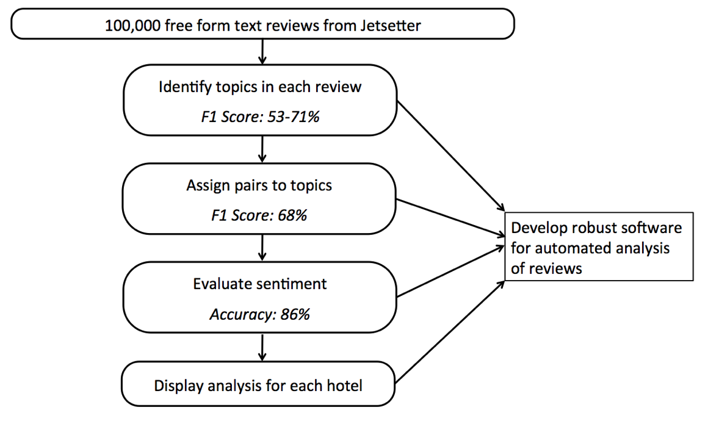

Opinion Mining and Sentiment Analysis of TripAdvisor Hotel Reviews
Opinion Mining and Sentiment Analysis of TripAdvisor Hotel Reviews
Yaxiong Cai, Toby Du, Peiheng Hu, Arjun Sanghvi
AC297r: Capstone Project
Instructor: Pavlos Protopapas, TF: Rahul Dave
Contact Us
Comments, questions, and suggestions are welcome!
Introduction
TripAdvisor, founded in 2000, is a public company that operates various travel websites providing travel-related content, such as editorial reviews of hotels, in addition to providing a free forum for user discussion. The company has about 2400 employees worldwide, and websites that are part of the TripAdvisor Group attract greater than 100 million monthly views. While revenue is primarily generated through advertising, user-generated content (such as photographs, ratings, and reviews) has become the backbone of the company. TripAdvisor has become such an integral part of travel business worldwide, that it holds enough sway to single-handedly make or break a hotel depending on how that hotel is portrayed on the Trip Advisor website. SmarterTravel, founded in 1998 and acquired by TripAdvisor in 2007, offers a portfolio of travel sites that can be searched simultaneously to explore prices. Jetsetter, founded in 2009 and acquired by TripAdvisor in 2013, acts as an online travel agency catering to customers searching for higher quality (higher price) accommodations.
The massive amount of user-generated content posted on Trip Advisor is an invaluable resource of feedback for hotels and Trip Advisor itself. With this feedback, Trip Advisor can conduct internal improvement efforts, in addition to working with hotels to improve the customer experience. To date, Trip Advisor has used the labor intensive and potentially biased method of manually analyzing a small subset of the reviews. The goal of this project, therefore, is to construct an automated system (software) for analyzing free-form text responses. The output of this analysis will include extraction of informative word pairs (e.g. “great location”) in addition to calculation of a sentiment score. Further details are given below.
Here is the relationship between TripAdvisor hotels and customers.
Methods
We used text mining and natural language processing to extract useful information from text reviews. After exploring the data, it became clear that the most relevant insights were posed in a pairwise, adjective-noun format. Categorization of text clearly lends itself to classification, and we tested various machine learning algorithms for this purpose. To quantify sentiment, we went beyond commonly used packages for automatic identification of polarity, and instead combined the results from several different methods. The overall framework of our process is shown here, and we detail each part below:
Then we proposed steps for constructing this system are as follows:
1. Pair Extraction
1.1 Dependency Tree
Notice in the example above that the insights we wish to extract are in the form of adjective-noun pairs. We use a package named “spaCy” to parse each sentence into a dependency tree. A dependency tree is a grammatical model that uses part of speech tagging and contextual elements to establish hierarchical relations between words and phrases within a sentence. Within the tree structure, if word A is under word B, it means word A depends on B. If a noun is the subject of the adjective, this noun shares the same head with the adjective. Therefore, we can use the dependency tree to identify noun-adjective associations.
Here is an example of the dependency tree for the sentence:
“Location is great and easily walkable to downtown Napa”

To find the noun-adjective pairs we use the following procedure:
For each noun:
Step 1) Go one level up and take this word as the head. If the noun is at the top of the tree, put itself as the head. In this example, we start with the noun “location” and find that the head is the word “is.”
Step 2) Find adjectives under this head. Here, the adjectives are “great” and “walkable.” If no adjectives are detected, go back to Step1.
Step 3) Find adverbs under the adjectives. In this case, we find “easily” associated with “walkable.”
Note that the next step in this process would be to consider the nouns “downtown” and “Napa.” In both cases, the associated head is not associated with any adjectives. Therefore, we do not extract these words.
The underlying algorithm that enables the construction of the dependency tree is based on the training of a shift-reduce dependency parser on the popular Penn Treebank corpus. While this corpus consists of published articles from the Wall Street Journal, our data has no such guaranteed grammatical structure. Indeed, many of the reviews we analyze are collections of text fragments, not sentences. As a result, we can achieve an F1 score of around 60%. To improve this result we looked to another method.
1.2 Chunk Tags
This method uses the Penn Treebank II tags in the package “Pattern”. Instead of parsing a sentence into a dependency tree, it tags each word with two labels: POS tags, Chunk tags. Chunk tags are assigned to phrases. If a group of words is a phrase, they are assigned the same chunk tag and there is an extra tag “B-” to indicate the preceding word of this chunk.
A given adjective may be found associated with the tag “NP”: noun phrase or the tag “ADJP”: adjective phrase. To extract noun and adjective pairs, we need to deal with these two cases differently.
Case 1: “NP”:
I had a delicious pizza in the restaurant
tags: NP VP B-NP NP NP B-PP PP PP
This is the easy case, in which the adjective and noun (“delicious pizza”) are in the same chunk.
Case 2: “ADJP”:
The staff is incredibly friendly.
tags: B-NP NP VP B-ADJP ADJP
In this case, the corresponding noun of the adjective in ADJP (“friendly”) is the noun before VP (“staff”).
This method is more accurate than the dependency tree and achieved a 65% F1 score on our data. In the end, we found that a combination of approaches works best. Specifically, if “Chunk tag” can extract at least one pair, we will use that result alone; but if it does not identify any pairs, then a dependency tree is used. This combined approach achieved an F1 score of 68%.
2. Topic Analysis
Instead of presenting an unordered list of adjective-noun pairs in the output, we wanted to present the results in an easily interpretable manner. When deciding how to organize the information, we looked to hotel rating systems and found that they tend to consist of only a handful of categories. For example, on TripAdvisor, users provide ratings in the categories of: location, sleep quality, rooms, service, value, and cleanliness. We wanted to stay consistent with this framework, but we also worked with TripAdvisor to identify other categories of particular interest to them. Therefore, in addition to the previously mentioned categories, we also considered: ambiance, amenities, food, Jet Setter, and property. These categories act as the bins in which we place each of the adjective-noun pairs, and provide a more fine-grained view into the performance of hotels in different aspects.
2.1 Random Forest Classification
Random forests are a common machine learning method for classification and regression that operate by developing a series of decision trees at training time and outputting the class that has been most commonly identified by individual trees.
One of the interesting outcomes of the random forest algorithm is the information about the importance of features. In this context, the important features are key words that contribute the largest increase in probability of topic association. Here we show the important features for the “sleep quality” classifier:
2.2 Logistic Regression
Logistic regression is another commonly used machine learning algorithm for classification. Our implementation follows the structure explained in the previous section. After comparing the results of random forests and logistic regression for each of the categories using 10-fold cross validation, we found that the latter performed better in every case.
While our initial accuracy metrics were all around 90%, we realized that the training set we had hand coded did not sample equally from all of the categories. Therefore, there was a major issue with imbalanced classes and some classifiers (e.g. sleep quality) labeled every text sample as not being associated with its category. The F1 score was a much more telling metric, and scores initially ranged from 30% to 50%. We then manually labeled up to 150 additional samples for the worst performers and tuned two key parameters. We decided to use regularized logistic regression with an L2 penalty, and therefore tuned the regularization strength. Additionally, since the logistic regression calculates probabilities for each class association given a text sample, the final binary class association calculation is based on whether the result is greater than 0.5 or not. However, this cutoff should be tuned when applied to imbalanced classes, because probabilities tend to be lower simply as a consequence of limited data availability. Here, we show the F1 scores associated with different combinations of regularization strength and cutoff values for the topic: room.
In this example, the highest F1 score is achieved with the regularization parameter set to 4 and a cutoff of 0.3. For each classifier, we chose the parameters that yielded the best F1 score. An example of classification applied to an adjective-noun pair is shown here:
We run the text through each classifier to find the topic association probability.
2.3 Mapping Pairs and Sentences to Categories
We first apply each topic classifier at the sentence level in order to narrow down the list of topics referenced in the sentence. With the smaller set of categories, we make use of both sentence logistic regression and adjective/noun pair logistic regression, taking 70% weight on adjective/ noun pair logistic regression and 30% weight on sentence logistic regression. We compare this weighted probability to the previously identified cutoffs to determine topic association. This method is superior to using sentence-level or pairwise classification alone.
2. Sentiment Analysis
One of the most important results for the project is to provide the sentiment scores for each hotel overall as well as for each specific category within each hotel. The sentiment scores provided are expected to be interpretable, comparable and accurate.
To be accurate, sentiment scores are expected to be extracted to provide decent result. To achieve this, two very distinct sentiment extraction algorithm are adopted.
2.1 SentiWordnet
The first one is to look up the sentiment scores from the SentiWordnet in NLTK, a lexical resource for opinion mining. SentiWordNet assigns to each synset of WordNet three sentiment scores: positivity, negativity, objectivity. What used in our project is the probability of positivity and negativity. For some of the words, there are multiple meanings and thus, very different sentiment scores. To figure out which specific sentiment we want to choose, we applied an algorithm called Lesk. The Lesk algorithm is a classical algorithm for word sense disambiguation. It compares the dictionary definition of an ambiguous word with the terms contained in its neighborhood and find the highest similarity from all the definitions and thus pin down the best possible sentiment score. Both scores of positivity and negativity ranges from 0 to 1, so the overall score from SentiWordNet is indeed from -1 to 1 because of the negative sign of negativity scores. To get it within range of 0 to 1, SentiWordNet score is uniformly mapped to range of 0 to 1 as the one sentiment extraction result.
2.2 Naïve Bayes
Another method is a supervised machine learning algorithm. The training data is from an already labeled movie review data. The label is either positive or negative. After training this, we take the hotel review pairs as input to get the probability that it belongs to positive label. We chose Naïve Bayes it has been widely used in text classification such as spam filtering. It is simple and fast to use and also it works well with multiple uncorrelated features.
2.3 Prior
Besides the two distinct method listed above, a Bayesian related method is purposed to take advantage of the reviews in this dataset that in each review is known to be a response to either the “what I loved” or “what to know” sections of the questionnaire. This information can be used to help infer the type of sentiment expressed in the review. The proposed Bayesian approach tries to take this useful information as the prior information, and combine it with the calculated adjective sentiment scores which are regarded as observations to provide a more holistic and robust sentiment score as the final result. Based on the preprocessing of the review data, we decided to assume a normally distributed prior with a mean of 0.3 for the sentiment of reviews from “what to know” and 0.7 for the sentiment of reviews from “what I loved,” in combination with a normal likelihood based on the text analysis. Because of the normal-normal conjugacy and under the assumption of equal variance of prior and likelihood, the posterior mean of the normal-normal posterior, which is the combined sentiment score to be shown as final result, can be easily simplified and calculated following the formula shown below:
As a brief summary, the sentiment scores are calculated as follows:
- Calculate the sentiment score of each pair using 3 different approaches
- Assume a Bayesian model to combine the results, with two regular methods as two distinct observations, and information from review type as prior
- Average the sentiment scores over all pairs in a topic
Below are the sentiment scores distribution separated by the two review types. From the density plots, we can see the difference between the two observations and also the impact of the prior choice.
Results
After using all the methods in adjective/ nouns extraction, topic classification and sentimental analysis, we can summarize the accuracy of each part in the following framework:
In addition to the functionality above, we have wrapped up everything into a complete software package, which makes the product easy to use. Moreover, we have build an interactive website that for whatever hotel review you define and input, we can give you the expected adjective/ nouns pair, topic category and sentimental score. The website link is listed here: Try Live Demo
In fact, the methods that we have developed here not only limit to hotel reviews, but can also be easily extended to any free form reviews such as movie reviews or restaurant reviews.
For future improvement, we thing we can definitely enhance is the topic classification score. Due to limited human resource, we only have 1500 sentences as training set. Since each sentence is transferred into a binary vector that contains all unique words, it is obvious that the more words we have here, the more comprehensive of training can achieve, which turns out to be a matter of having a larger training set. If the training set can be enlarged to about 15,000 sentences with each category unbiased divided, we have confidence that the F1 score can be largely improved.
Conclusions
Acknowledge
We thank Ryan Amari, Bryan Balin, and Chris Stasonis for providing the data and helpful insights.
Our capstone project is from the AC297r course in IACS, Harvard. Here is the link to the class AC297r
Contact information
Yaxiong Cai: yaxiongcai at g.harvard.edu
Toby Du: ruitaodu at g.harvard.edu
Peiheng Hu: peihenghu at g.harvard.edu
Arjun Sanghvi: asanghvi at g.harvard.edu
Instructor: Pavlos Protopapas: pavlos at seas.harvard.edu
TF: Rahul Dave: rahuldave at gmail.com